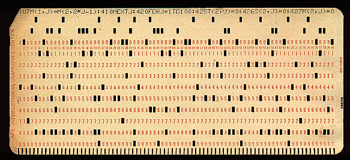

Simple Batch System:
Some computer processes are very time-consuming and lengthy. A work with a similar kind of needs is batched together and run as a group to speed the same process. The operator of a batch operating system never communicates directly with the PC. Each user prepares his or her job on an offline device like a punch card in this type of OS and submits it to the computer operator.

punch card
Multi-Tasking/Time-sharing Operating systems:
Time-sharing operating system makes simultaneous use of a single computer device by people located at a separate terminal(shell). Processor Time (CPU) shared between multiple users is called time sharing.Distributed Operating System:
Distributed systems use several processors located in various machines to provide their users with very fast computation. The impetus behind the development of distributed operating systems is the availability of powerful and cheap microprocessors, as well as developments in communication technology.Realtime Operating System:
A time interval for processing and responding to inputs is very small, in real time. The critical task will take precedence over other tasks, but there is no assurance that it will be completed in a set time. Examples: Space Software Systems, Military Software Systems.Network Operating System:
Network Operating System runs on a server. It provides the ability to serve data, user, group, security, application, and other networking functions management.Mobile OS:
Mobile operating systems are those operating systems that are particularly designed to control devices such as smartphones, tablets, and wearables. Some of the most Mobile operating systems are those operating systems that are particularly designed to control devices such as smartphones, tablets, and wearables. Some of the most